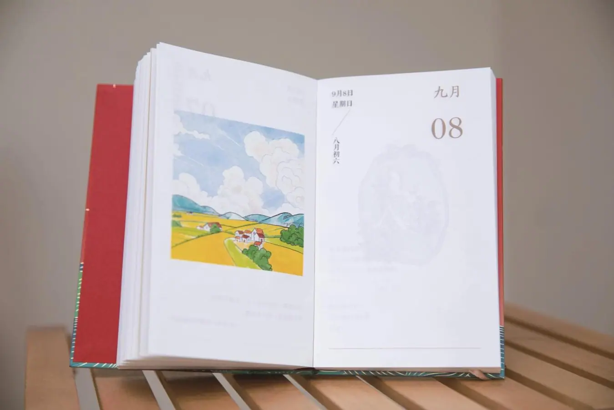

时间的表达（1）
Ngày tháng và thứ được sắp xếp từ đơn vị lớn đến nhỏ.
年 → 月 → 日/号 → 星期
1992年5月16日，星期六。 🔊
今天9月8号。 🔊

Hỏi và nói ngày tháng, thứ trong tuần.
Diễn đạt kỹ năng có được qua học tập.
Dùng danh từ hoặc cụm danh từ làm vị ngữ.
Nói về nghỉ ngơi, nấu ăn và đồ vật mới.
Chọn một từ, sau đó chọn hình ảnh tương ứng.
Nhấn vào thẻ để lật. Nhấn chữ Hán hoặc nút loa để nghe phát âm.
Ngày tháng và thứ được sắp xếp từ đơn vị lớn đến nhỏ.
1992年5月16日，星期六。 🔊
今天9月8号。 🔊
Vị ngữ chỉ gồm danh từ hoặc thành phần có tính chất danh từ, thường diễn đạt thời gian, ngày tháng hoặc tuổi tác.
今天几号？今天5月1号。 🔊
我妹妹12岁。 🔊
会 đặt trước động từ, biểu thị biết hoặc có khả năng thực hiện một hành động thông qua học tập.
你会做饭吗？ 🔊
我会做面条儿。 🔊
我不会做菜。 🔊
Chọn nhân vật để ẩn lời thoại của vai đó. Nhấn vào dòng thoại để nghe.
Chọn đáp án đúng theo nội dung ba bài khóa.
1. 杨同乐会做什么？
Dương Đồng Lạc biết nấu món gì?
2. 杨同乐星期天做什么？
Chủ nhật Dương Đồng Lạc làm gì?
1. 杨同乐的新电脑怎么样？
Máy tính mới của Dương Đồng Lạc như thế nào?
2. 杨同乐喜欢他的新电脑吗？
Dương Đồng Lạc có thích máy tính mới của anh ấy không?